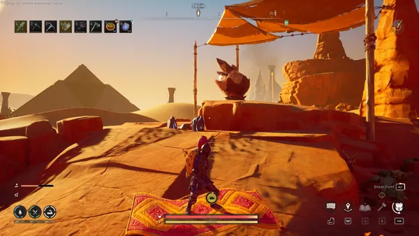
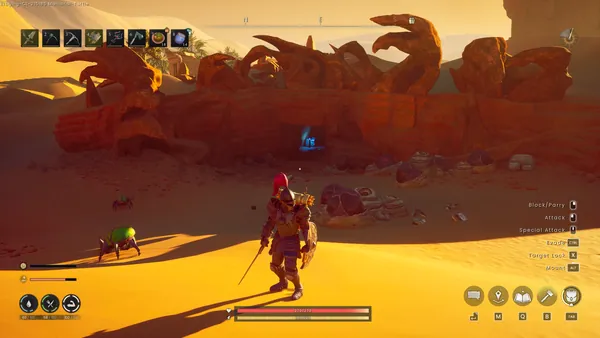
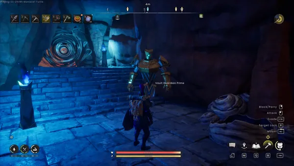
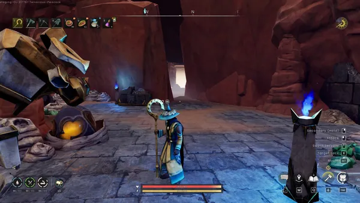
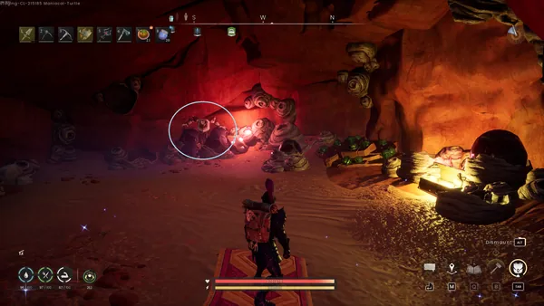
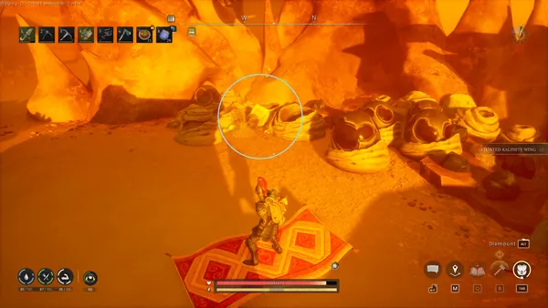
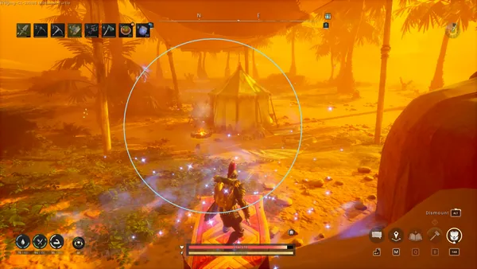
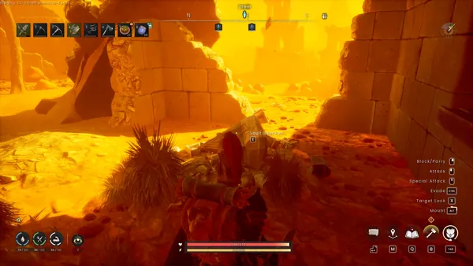

Contact! is a secondary quest within Umbral Sands. You can start the quest by speaking with Avisk.
Overview
- 1 Shovel
- 1 Pickaxe
- 4 Vault Shards
- Plenty of food/drink for keeping up thirst and hunger.
Map
Walkthrough
Speak to the Avisk crystal in Umbral Sands to start this quest.


Find defunct vault guardians, gather fragments of the crystal helix, and use them together to open a shortcut to Fuzan.
Speak to Vault Guardian Prime in a nearby cave, hints there are 3 crystal helix remains you have to gather.
Vault Guardian Prime Cave Entrance:


Vault Guardian Prime:


Damaged vault guardian
While still in the room with Vault Guardian Prime, Turn directly opposite of Vault Guardian Prime, follow the red lights through the tunnels, once you reach the big cave, the guardian remains will be on the left-hand side.
Damaged vault guardian entrance:


Damaged vault guardian location:


Dead vault guardian
This guardian is in the kalphite eggs outside and to the right of the cave entrance.
You will get a message saying this Helix is missing and that you need to locate the owner of the Footprints.


Speak to Zanik east of the kalphites at an oasis camp, and she will give you the crystal helix in exchange for your help.


Buried vault guardian
Last guardian location is within a ruined building, you need a shovel to dig up the guardian. If you have 4 vault shards in your inventory, you can reactivate it and get the Helix.


Return to vault guardian Prime and hand over the crystal helix fragments. Use the crystal helix to pass through the magical barrier.
Speak to Zanik, break the Avisk crystals with a pickaxe, interact with each Vein of Consciousness, and then speak to Zanik once more.
Congratulations! Quest Completed.
Reward
- The ability to create the pharaoh's sceptre.
Update history
This information is based on the changelogs of the game.
- The Icthlarian Fetish was removed from the game, and players will instead receive the option to create the pharaoh's sceptre.
Trivia
- The quest is named after the RuneScape and Old School RuneScape quest, Contact!.
This guide is the wiki's Contact! article, by its editors, reformatted for this site. Licensed CC BY-NC-SA 3.0.